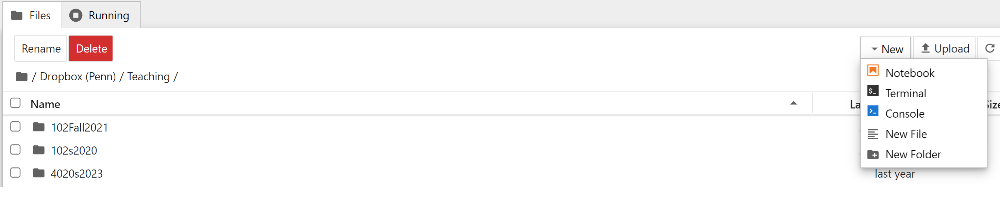
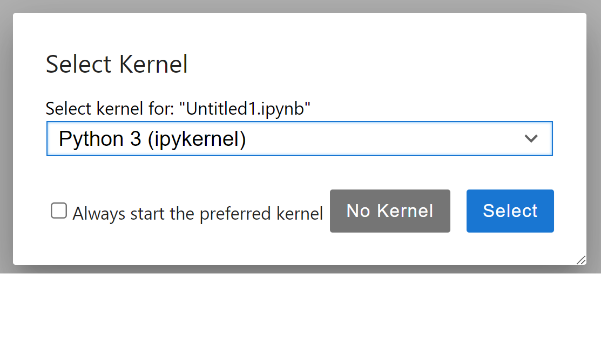
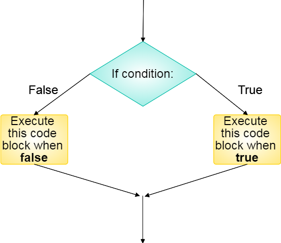
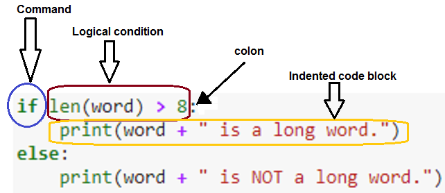
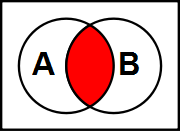
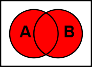
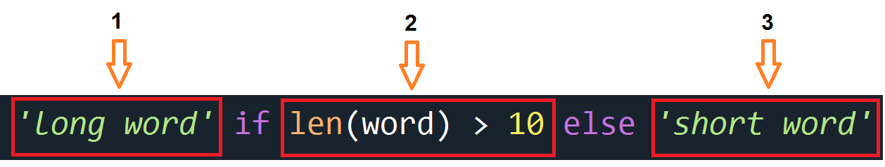
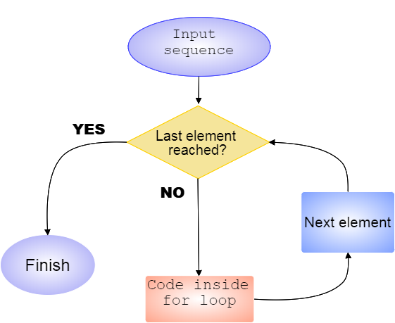
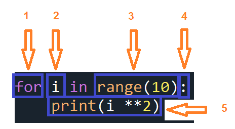
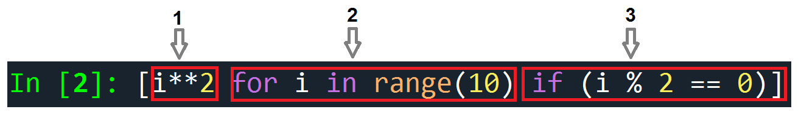

Richard Waterman
August 2026


## Markdown
* Markdown is a light-weight markup language with various flavors for different computing environments.
* It consists of identifiers (tags), that tell how text and images should be later rendered.
* It relies on another program (engine) to actually create the final rendered output.
* Typical markdown elements include:
* Headers.
* Images and links.
* Lists.
* Mathematical symbols and equations: $A = \pi r^2$.
* Tables.
* Word decorations, e.g. *italic*, **bold**, ***emphasis***.
* Tables.
* You can render markdown in a Jupyter notebook markdown cell by pressing Ctr-Enter.
* We will use basic markdown. You don't have to make the output look pretty for the homeworks!


word = "Soliloquy"
if len(word) > 8:
print(word + " is a long word.")
else:
print(word + " is NOT a long word.")Soliloquy is a long word. Cell In[2], line 2
print(word + " is a long word.")
^
IndentationError: expected an indented block after 'if' statement on line 1

| X | Y | X and Y |
|---|---|---|
| True | True | True |
| True | False | False |
| False | True | False |
| False | False | False |

| X | Y | X or Y |
|---|---|---|
| True | True | True |
| True | False | True |
| False | True | True |
| False | False | False |
X = [True, True, False, False]
Y = [True, False, True, False]
print([i and j for i, j in zip(X, Y)]) # The "and" (&) truth table[True, False, False, False][True, True, True, False]FalseTruea, b, c, d = 5.1, 12.2, -4, 12.2 # Assign four numbers at once. The right-hand side is a 4-tuple
print(a == b)
print(a != c)
print(b > d)
print(b >= d)
print(c < a)
print(d <= c)False
True
False
True
True
Falseword = "Reasonable"
if (len(word) > 8) and (word[0] == "Y"):
print("A long word beginning with Y")
elif (len(word) > 8) and (word[0] != "Y"):
print("A long word not beginning with Y")
else:
print("Not a long word")A long word not beginning with Y'long word''short word'


The basic for loop structure looks like this:

data = [7, 13, 21, 3, 8, 12] # Data contained in a list
transformed_data = [] # An empty container to accept the transformed data
for i in range(len(data)): # i will take on integer values, 0, 1, ... 5
transformed_data.append(data[i] ** 0.5) # This is the square root transformation
print(transformed_data) # Take a look at what we have created.[2.6457513110645907, 3.605551275463989, 4.58257569495584, 1.7320508075688772, 2.8284271247461903, 3.4641016151377544]data = [7, 13, 21, 3, 8, 12] # Data contained in a list
transformed_data = []
for i, value in enumerate(data): # note that two components are being returned, i and value.
print ("Looking at " + str(value) + " in position " + str(i))
transformed_data.append(value ** 0.5 )
print(transformed_data)Looking at 7 in position 0
Looking at 13 in position 1
Looking at 21 in position 2
Looking at 3 in position 3
Looking at 8 in position 4
Looking at 12 in position 5
[2.6457513110645907, 3.605551275463989, 4.58257569495584, 1.7320508075688772, 2.8284271247461903, 3.4641016151377544]import numpy as np # We will use numpy to help shuffle the deck
# Build a card deck (not worrying about the suit)
card_deck = [2, 3, 4, 5, 6, 7 ,8 , 9, 10, 'J','Q','K', 'A'] * 4
# A variable for the number of iterations in the simulation.
num_its = 10000
# A counter to track the number of times the condition (the first two cards are both aces) is true.
counter = 0
# The for loop
for i in range(num_its):
new_deck = np.random.permutation(card_deck) # shuffle the deck.
if ((new_deck[0] == "A") and (new_deck[1] == "A")):
counter = counter + 1
print("The estimated probability of two aces is ", counter/num_its)The estimated probability of two aces is 0.004for i in range(0,5): # The numbers 1 through 4 (outer loop)
for j in range(1,5): # The inner loop.
total = i + j
if total > 4: # break out of the inner loop if the total is greater than 4
break
print ("Outer is {0}, inner is {1}, total is {2}".format(i,j,total)) # More on string formats later.Outer is 0, inner is 1, total is 1
Outer is 0, inner is 2, total is 2
Outer is 0, inner is 3, total is 3
Outer is 0, inner is 4, total is 4
Outer is 1, inner is 1, total is 2
Outer is 1, inner is 2, total is 3
Outer is 1, inner is 3, total is 4
Outer is 2, inner is 1, total is 3
Outer is 2, inner is 2, total is 4
Outer is 3, inner is 1, total is 41
3
5
7One Infinite Loop, Cupertino, CA 95014
x = 0
while x < 6:
print('Keep going, I rolled a {}!'.format(x)) # Note the .format method for the string.
x = np.random.randint(1,7) # This line of code rolls a six-sided die.Keep going, I rolled a 0!
Keep going, I rolled a 2!results = [] # start with an empty list to store the results of the experiment.
num_its = 10000 # The number of simulation iterations
for i in range(num_its):
new_deck = np.random.permutation(card_deck) # shuffle the deck.
counter = 1 # a counter for how many cards until the ace is first seen.
while new_deck[counter - 1] != 'A':
counter = counter + 1
results.append(counter)
print("The expected waiting time to the first ace is", sum(results)/num_its, "cards")The expected waiting time to the first ace is 10.4829 cardsresult_1 = [i**2 for i in range(10)] # The first 10 square numbers.
print(result_1)
result_2 = [i**2 for i in range(10) if (i % 2 == 0)] # Squares of even numbers.
print(result_2)[0, 1, 4, 9, 16, 25, 36, 49, 64, 81]
[0, 4, 16, 36, 64]

words = ["This", "is", "a", "list", "of", "key", "words"]
print([word[::-1] for word in words if len(word) > 3])['sihT', 'tsil', 'sdrow']